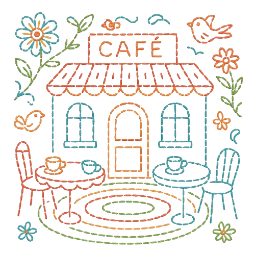
ABOUT US
The Kantha Kafe is a quiet blend of heritage and comfort tucked into a corner of London. It started with a simple idea: what if a café could feel like home—and also carry the weight of a tradition passed down through generations? Kantha embroidery, a centuries-old craft from Bengal, became our muse. You’ll find it in our cushions, table runners, and even the menu design. This space isn’t about rushing—it’s about sitting down, noticing the little details, and maybe feeling a bit more connected. Whether you’re here for a quick cup or a long afternoon, we want the warmth to stay with you even after you leave.
Learn More ——>
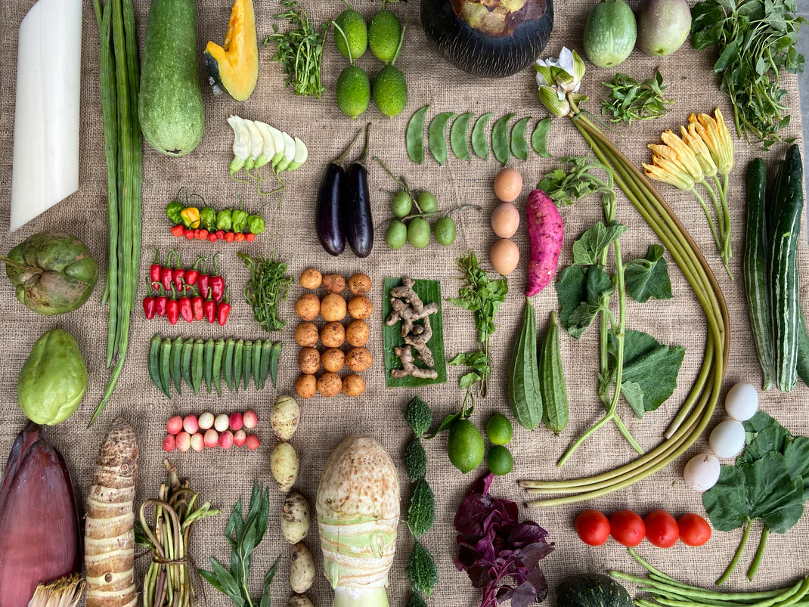
MENU
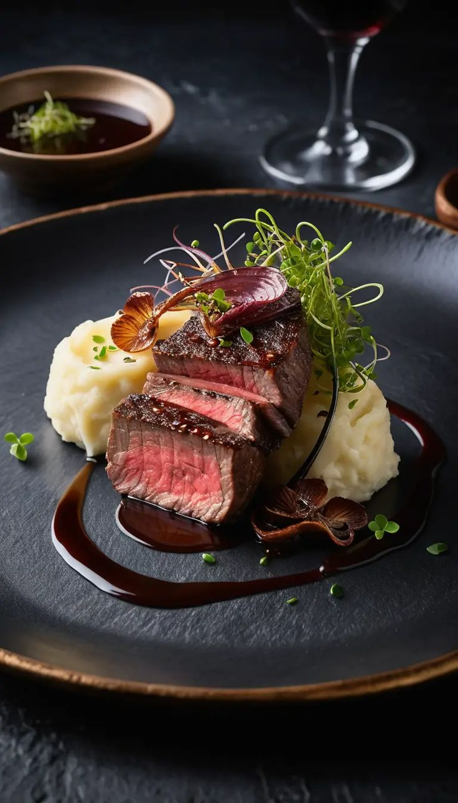
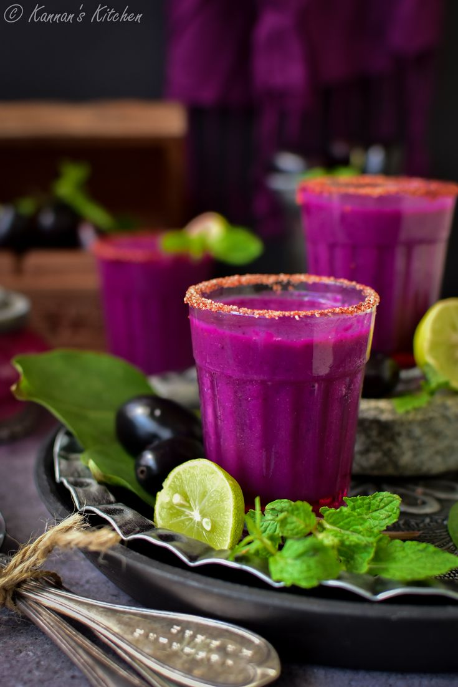
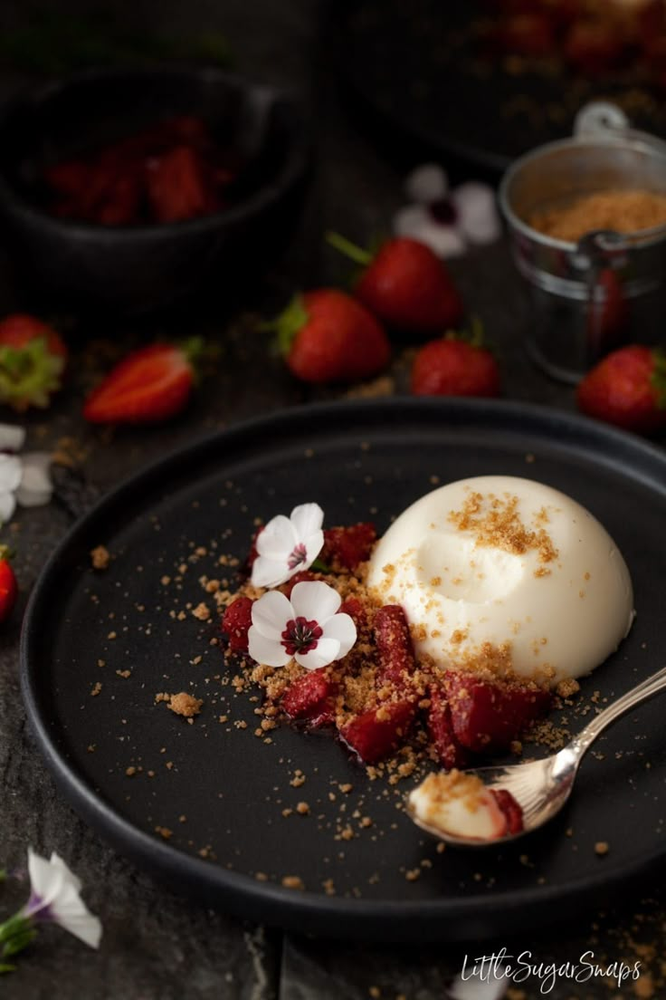
SHOP THE CRAFT
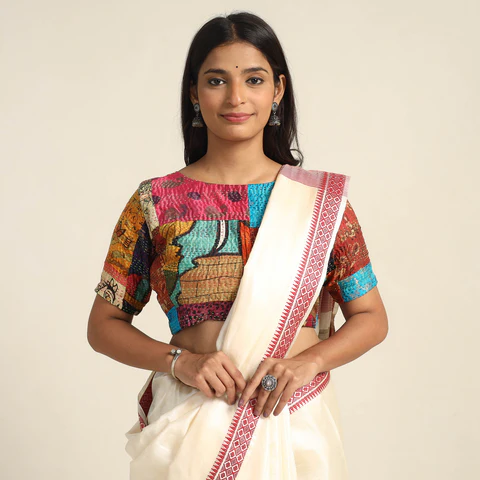
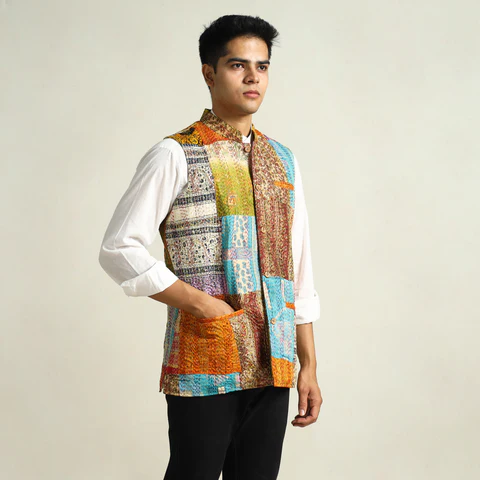
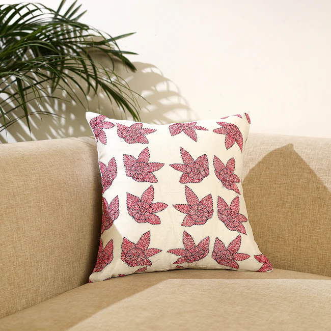
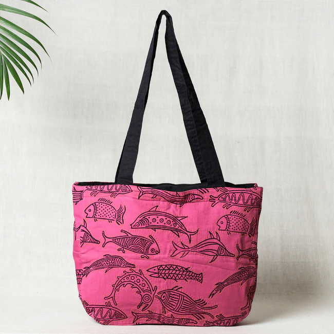
JOIN OUR WORKSHOP
Our Kantha workshops are about slowing down and making something with your hands. No fancy tools. No pressure. Just a few stitches, a few stories, and maybe a bit of chai. We host regular sessions where anyone—beginner or not—can learn the basics of Kantha, try simple motifs, and take home something personal and handmade. You’ll learn directly from artists who’ve practiced this craft for years. It’s a space to create, to connect, and to step away from screens for a while. All materials are provided—just bring yourself and a little curiosity.
Book Now ——>
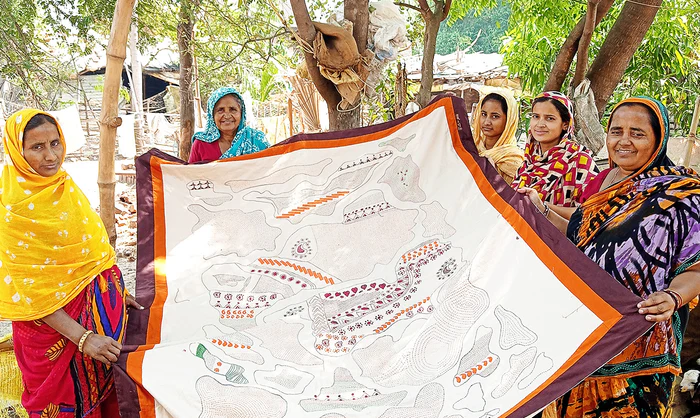
MEET THE ARTISANS
Kantha isn’t just a craft. It’s a form of storytelling. And the storytellers matter. Our café proudly works with women artisans from rural Bengal—women who’ve grown up stitching memories, seasons, and symbols into old saris. Every piece we showcase, every product we sell, has a face and a voice behind it. We believe in fair collaboration, not charity. Our artisans set their prices, choose their designs, and share their stories in their own words. In this section, you can meet them, read about their journeys, and see how your support helps keep their work—and independence—alive.
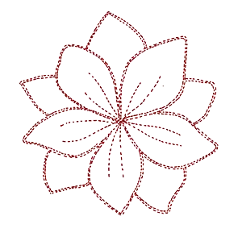